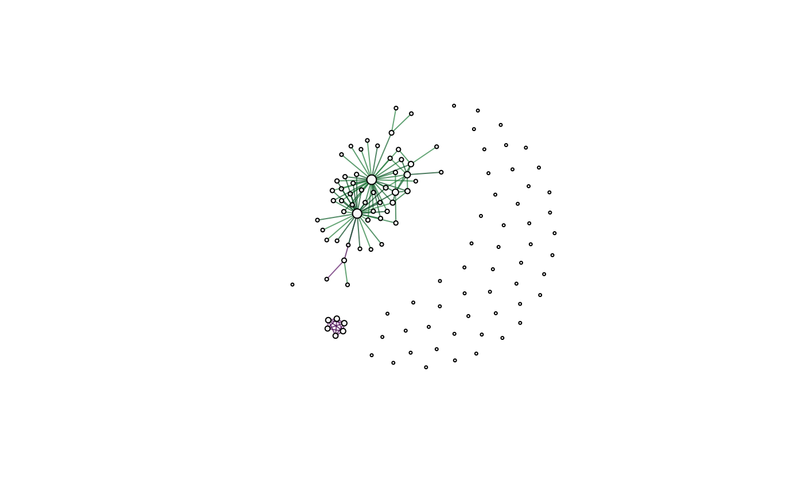

vignettes/dcanr_vignette.Rmd
dcanr_vignette.RmdThis package provides methods to perform differential co-expression analysis and to evaluate differential co-expression methods using simulated data. Differential co-expression analysis attempts to identify gene-gene associations that change across conditions. Currently, 10 methods that identify changes between binary conditions are included: 8 are novel Bioconductor implementations of previously published methods, and; 2 are accessed through interfaces to existing packages.
This vignette focuses on the application of differential co-expression inference methods to real data. Available methods, putative pipelines, and visualisations provided by the method are introduced.
Download the package from Bioconductor
if (!requireNamespace("BiocManager", quietly = TRUE))
install.packages("BiocManager")
BiocManager::install("dcanr")Or install the development version of the package from Github.
BiocManager::install("DavisLaboratory/dcanr")Load the installed package into an R session.
The package implements 10 methods to infer differential co-expression
networks across binary conditions. The list of available methods can be
accessed by the dcMethods() function.
## [1] "dicer" "diffcoex" "ebcoexpress" "entropy" "ftgi"
## [6] "ggm-based" "ldgm" "magic" "mindy" "zscore"A differential co-expression pipeline generally consists of 4 steps:
Not all methods follow this pipeline. EBcoexpress computes posterior probabilities therefore no statistical test needs to be performed and steps 2-3 can be skipped. Like-wise DiffCoEx does not perform any statistical tests and instead performs a soft-thresholding on the scores. FTGI performs a statistical test and \(p\)-values from this test are used as scores, therefore step 2 is skipped. A standard analysis with the z-score method using all 4 steps is shown here.
We first load an example simulated dataset (included in the package)
to extract the expression matrix and condition vector. Please note that
multiple knock-down experiments are performed per simulation and we use
one such knock-down as a condition here. The list of all knock-downs can
be retrieved using getConditionNames().
#load data
data(sim102)
#get available conditions
getConditionNames(sim102)## [1] "ADR1" "UME6"
#get expression data and conditions for 'UME6' knock-down
simdata <- getSimData(sim102, cond.name = 'UME6', full = FALSE)
emat <- simdata$emat
ume6_kd <- simdata$condition
print(emat[1:5, 1:5]) #149 genes and 406 samples## sample_1 sample_2 sample_3 sample_4 sample_5
## ADR1 0.4997864 0.4692072 0.3937255 0.1390989 0.05291159
## FLO8 0.3340156 0.2845828 0.3682575 0.2263656 0.19292056
## GIS1 0.3955383 0.4922471 0.5006614 0.2672858 0.48041978
## IME4 0.4658504 0.3529325 0.4188025 0.3824827 0.33371681
## KAR4 0.3705384 0.5812146 0.5282095 0.4945329 0.46677489
head(ume6_kd) #NOTE: binary conditions encoded with 1's and 2's## sample_1 sample_2 sample_3 sample_4 sample_5 sample_6
## 2 2 1 1 1 1All inference methods can be accessed using the same call therefore
making it easier to change between methods. Method specific parameters
can be passed to this function and will be managed accordingly. The
default inference method is z-score therefore it does not need to be
specified via dc.method. We recommend using the Spearman
correlation as a measure of correlation as it is robust to outliers
which may be present in RNA-seq data.
#apply the z-score method with Spearman correlations
z_scores <- dcScore(emat, ume6_kd, dc.method = 'zscore', cor.method = 'spearman')
print(z_scores[1:5, 1:5])## ADR1 FLO8 GIS1 IME4 KAR4
## ADR1 NA -0.05890109 1.0645602 -0.6869672 -0.2843683
## FLO8 -0.05890109 NA 0.1855110 0.9256449 0.6803593
## GIS1 1.06456016 0.18551097 NA 0.6336496 -1.2508845
## IME4 -0.68696722 0.92564487 0.6336496 NA 0.4433642
## KAR4 -0.28436825 0.68035927 -1.2508845 0.4433642 NAAppropriate statistical tests are automatically selected for the
method applied. Tests are applied on the result of the
dcScore() function (z-test for the z-score method and
permutation tests for other methods). The testing function returns the
score matrix (unmodified) if the method is either EBcoexpress, FTGI or
DiffCoEx.
NOTE: Do NOT modify the result of the scoring method as this will result in failure of the testing function. This is intended as tests should be performed for all computed scores to prevent bias in the subsequent correction for multiple hypothesis testing. The same applies for the next step.
#perform a statistical test: the z-test is selected automatically
raw_p <- dcTest(z_scores, emat, ume6_kd)
print(raw_p[1:5, 1:5])## ADR1 FLO8 GIS1 IME4 KAR4
## ADR1 NA 0.9530309 0.2870750 0.4921034 0.7761282
## FLO8 0.9530309 NA 0.8528283 0.3546306 0.4962770
## GIS1 0.2870750 0.8528283 NA 0.5263095 0.2109766
## IME4 0.4921034 0.3546306 0.5263095 NA 0.6575023
## KAR4 0.7761282 0.4962770 0.2109766 0.6575023 NAFor methods such as MINDy that require a permutation test, the number
of permutations can be specified by the B parameter.
Permutation tests are computationally expensive therefore we also
provide a parallelised implementation. See the help page of
dcTest for examples.
Since all pairwise combinations of genes are tested, \(p\)-values need to be adjusted. Given \(n\) genes, the total number of hypothesis
is \(\frac{n(n-1)}{2}\) as the score
matrices are symmetric. Adjustment is performed accordingly. The default
adjustment function is stats::p.adjust with the ‘fdr’
method used, however, custom functions and their parameters can be
specified instead. dcAdjust provides a wrapper to apply an
adjustment method to the raw \(p\)-value matrix. Results from EBcoexpress
and DiffCoEx remain unmodified.
#adjust p-values (raw p-values from dcTest should NOT be modified)
adj_p <- dcAdjust(raw_p, f = p.adjust, method = 'fdr')
print(adj_p[1:5, 1:5])## ADR1 FLO8 GIS1 IME4 KAR4
## ADR1 NA 0.9933963 0.8879726 0.9289498 0.9655700
## FLO8 0.9933963 NA 0.9748335 0.9116214 0.9289498
## GIS1 0.8879726 0.9748335 NA 0.9328853 0.8494282
## IME4 0.9289498 0.9116214 0.9328853 NA 0.9512398
## KAR4 0.9655700 0.9289498 0.8494282 0.9512398 NAThe last step is thresholding the score/adjusted \(p\)-value matrix to select differential
associations. Default adjusted \(p\)-value thresholds of 0.1 are applied
where statistical tests are performed (to control for FDR at 0.1).
Results are presented as an igraph object shown below where
edges are coloured based on the score (negative to positive scores are
represented using the purple to green gradient of colours).
library(igraph)
#get the differential network
dcnet <- dcNetwork(z_scores, adj_p)
plot(dcnet, vertex.label = '')
## ADR1 FLO8 GIS1 IME4 KAR4
## ADR1 0 0 0 0 0
## FLO8 0 0 0 0 0
## GIS1 0 0 0 0 0
## IME4 0 0 0 0 0
## KAR4 0 0 0 0 0
#convert to a data.frame
edgedf <- as_data_frame(dcnet, what = 'edges')
print(head(edgedf))## from to score color
## 1 ADR1 ACS1 -3.648617 #671F73B3
## 2 ADR1 CTA1 -4.399843 #40004BB3
## 3 ADR1 FOX2 -4.712234 #40004BB3
## 4 ADR1 GUT1 -5.999899 #40004BB3
## 5 STE12 BAR1 4.426577 #00441BB3
## 6 SWI5 RME1 -3.780175 #5E186AB3## R version 4.2.1 (2022-06-23)
## Platform: x86_64-pc-linux-gnu (64-bit)
## Running under: Ubuntu 20.04.5 LTS
##
## Matrix products: default
## BLAS: /usr/lib/x86_64-linux-gnu/openblas-pthread/libblas.so.3
## LAPACK: /usr/lib/x86_64-linux-gnu/openblas-pthread/liblapack.so.3
##
## locale:
## [1] LC_CTYPE=en_US.UTF-8 LC_NUMERIC=C
## [3] LC_TIME=en_US.UTF-8 LC_COLLATE=en_US.UTF-8
## [5] LC_MONETARY=en_US.UTF-8 LC_MESSAGES=en_US.UTF-8
## [7] LC_PAPER=en_US.UTF-8 LC_NAME=C
## [9] LC_ADDRESS=C LC_TELEPHONE=C
## [11] LC_MEASUREMENT=en_US.UTF-8 LC_IDENTIFICATION=C
##
## attached base packages:
## [1] stats graphics grDevices utils datasets methods base
##
## other attached packages:
## [1] igraph_1.3.5 dcanr_1.13.4 BiocStyle_2.25.0
##
## loaded via a namespace (and not attached):
## [1] highr_0.9 RColorBrewer_1.1-3 bslib_0.4.0
## [4] compiler_4.2.1 BiocManager_1.30.18 jquerylib_0.1.4
## [7] iterators_1.0.14 tools_4.2.1 rngtools_1.5.2
## [10] digest_0.6.29 jsonlite_1.8.2 evaluate_0.16
## [13] memoise_2.0.1 pkgconfig_2.0.3 rlang_1.0.6
## [16] doRNG_1.8.2 foreach_1.5.2 cli_3.4.1
## [19] yaml_2.3.5 parallel_4.2.1 pkgdown_2.0.6.9000
## [22] xfun_0.33 fastmap_1.1.0 stringr_1.4.1
## [25] knitr_1.40 desc_1.4.2 fs_1.5.2
## [28] sass_0.4.2 GlobalOptions_0.1.2 systemfonts_1.0.4
## [31] grid_4.2.1 rprojroot_2.0.3 R6_2.5.1
## [34] textshaping_0.3.6 rmarkdown_2.16 bookdown_0.29
## [37] purrr_0.3.5 magrittr_2.0.3 codetools_0.2-18
## [40] htmltools_0.5.3 shape_1.4.6 colorspace_2.0-3
## [43] circlize_0.4.15 ragg_1.2.3 stringi_1.7.8
## [46] cachem_1.0.6